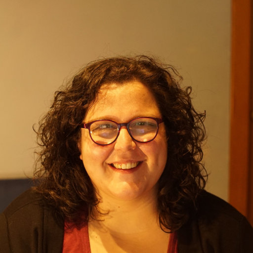

Assegnista di ricerca in linguistica italiana
Floriana Sciumbata

Mi occupo di linguistica italiana e sono dottoressa di ricerca in Studi Linguistici e Letterari (Università di Udine) e assegnista di ricerca (Dipartimento di Scienze Giuridiche, del Linguaggio, dell'Interpretazione e della Traduzione, Università di Trieste). Ho creato le prime linee guida specifiche per l'italiano per il linguaggio facile da leggere e da capire e per il mio progetto di ricerca mi sono occupata di diverse applicazioni, anche didattiche. Mi interesso anche di semplificazione del linguaggio amministrativo, linguistica dei corpora, applicazione di metodi quantitativi all'analisi testuale e digital humanities .